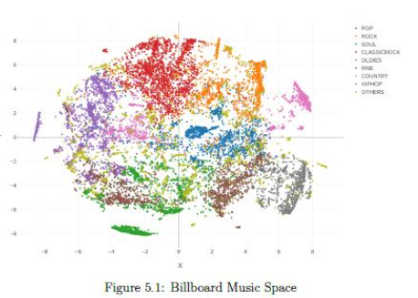
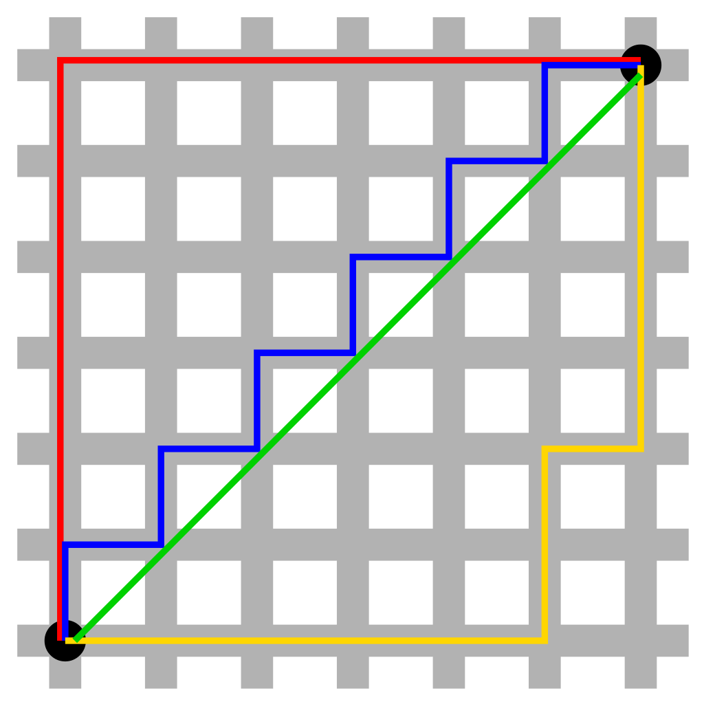
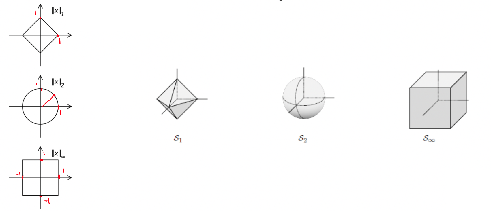
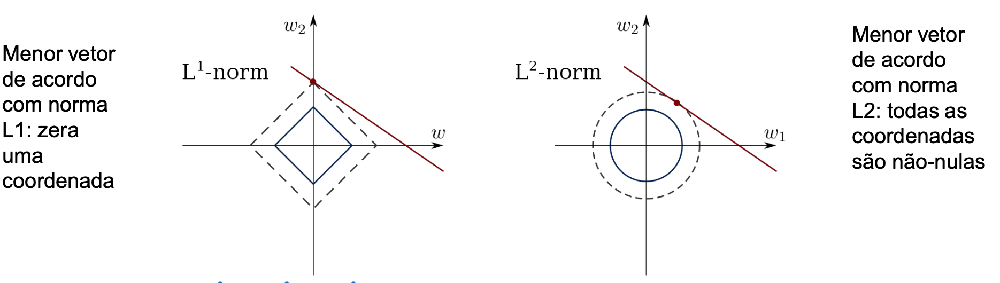

Aula 06: Normas de Vetores e Matrizes
Important
Os slides desse curso são fortemente baseados no curso do Fabrício Murai e do Erickson Nascimento

Objetivo: gerar playlists que passem de um estilo a outro de forma SUAVE. Playlists devem ser aleatórias, diferentes a cada dia.
Normas em \(\mathbb R^2\) e \(\mathbb R^3\)
\[x = (x_1,x_2,\ldots,x_n)^\top\]
\[\Vert x \Vert = \sqrt{x_1^2 + x_2^2 + \ldots + x_n^n}\]
\[\Vert x \Vert = \sqrt{x^\top x}\]
\[u = \begin{bmatrix}0\\-1\\2\\-2\\4\end{bmatrix} \text{ e } v = \begin{bmatrix}i\\2\\1+i\\0\\1-i\end{bmatrix}\]
\[\Vert u \Vert = \sqrt{u^\top u} = \sqrt{0+1+4+4+16} = 5 \]
\[\Vert v \Vert = \sqrt{v^* v} = \sqrt{1+4+2+0+2} = 3 \]
\[\Vert x\Vert \ge 0 \text{, } \Vert x\Vert = 0 \Leftrightarrow x =0 \text{ e } \Vert \alpha x\Vert = \vert \alpha\vert \, \Vert x \Vert\]
Normalização do vetor
Dado um vetor \(x \ne 0\), é frequentemente conveniente termos outro vetor que aponta para a mesma direção que \(x\) mas apresenta comprimento unitário. Para isso, normalizamos o vetor
\[\lVert u\rVert = \left\lVert\frac{x}{\lVert x\rVert} \right\rVert= \frac{1}{\lVert x\rVert} \lVert x\rVert = 1\]
\[ a^\top b = \Vert a \Vert \Vert b\Vert \cos(\theta)\]
O comprimento da projeção ortogonal de um vetor \(a\) sobre o vetor \(b\) é
\[ \Vert a\Vert \cos(\theta) = a^\top \frac{b}{\Vert b\Vert}\]
\[ | x^\top y| = \Vert x \Vert \Vert y \Vert |\cos(\theta)| \le \Vert x \Vert \Vert y \Vert\]
Teorema da Desigualdade Triangular
\[ \Vert x+y\Vert \le \Vert x \Vert + \Vert y\Vert \text{, para todo $x,y$}\]
vamos elevar os dois lados ao quadrado, temos \[(\Vert x+y\Vert)^2 \le (\Vert x \Vert + \Vert y\Vert)^2 \le \Vert x\Vert^2 + 2\Vert x\Vert \Vert y\Vert + \Vert y\Vert^2\] \[\begin{align}\Vert v\Vert^2 &= (\sqrt{v^\top v})^2\\ &= (x+y)^\top (x+y) \\ &= \Vert x\Vert^2 + 2x^\top y+\Vert y\Vert^2 \\ &\le \Vert x\Vert^2 + 2\vert x^\top y\vert + \Vert y\Vert^2 \\&\le \Vert x\Vert^2 + 2\Vert x\Vert \Vert y\Vert + \Vert y\Vert^2 \end{align}\]
\[\begin{align} d(p,q) = d(q,p) &= \sqrt{(q_1 - p_1)^2 + \ldots + (q_n - p_n)^2} \\ &= \sqrt{\sum_{i=1}^n (q_i-p_i)^2}\end{align}\]
Manhattan distance (norma L1)
Manhatan vs Euclidian
\[\Vert x \Vert_1 = \vert x_1\vert + \vert x_2 \vert + \ldots + \vert x_n\vert\]
Caso bi-dimensional:
\[\Vert (x,y) \Vert_1 = \vert x\vert + \vert y\vert\]
\[d(x,y) = \vert x_1 - y_1 \vert + \ldots + \vert x_n - y_n\vert\]
Matemáticos possuem uma definição genérica de norma que vale também para outras situações além de matrizes
Norma de um vetor (definição geral)
A norma para um espaço vetorial \(\mathcal V\) real ou complexo é uma função \(\Vert \star \Vert\) que mapeia \(\mathcal V\) em \(\mathbb R\) e que satisfaz as seguintes condições
Generalizando:
\(\Vert x \Vert_1 = \sqrt[1]{\sum_{i=1}^n \vert x_i \vert^1}\)
\(\Vert x \Vert_2 = \sqrt{\sum_{i=1}^n \vert x_i \vert^2}\)
\(\Vert x \Vert_p = \sqrt[p]{\sum_{i=1}^n \vert x_i \vert^p}\)
\(\Vert x \Vert_\infty = \max_i \vert x_i\vert\)
Falhas
\(p=0\) não é uma norma válida pois \(\Vert 2v\Vert_0 = \Vert v \Vert_0\), que viola a propriedade da multiplicação por um escalar.
\(p<1\) também não é norma. Ex: \(p=1/2\) falha na desigualdade triangular pois \((1,0)\) e \((0,1)\) têm norma 1, mas a soma \((1,1)\) teria norma \(2^{1/p}=4>2\). Apenas \(1\le p\le \infty\) produz normas aceitáveis \(\Vert v \Vert_p\)
Calcular as normas 1, 2 e \(\infty\) do vetor \(x = \begin{bmatrix}2 &-3& 1\end{bmatrix}^\top\)
\[ \Vert x\Vert_1 = \vert 2\vert + \vert -3\vert +\vert 1 \vert =6\]
\[ \Vert x\Vert_2 = \sqrt{\vert 2\vert^2 + \vert -3\vert^2 +\vert 1 \vert^2}= \sqrt{14} \approx 3,7417\]
\[ \Vert x\Vert_\infty = \max{\vert 2\vert + \vert -3\vert +\vert 1 \vert} = 3\]
As normas induzem geometrias distintas
Às vezes é fácil provar um resultado usando uma definição de distância, mas é impossível usando outra
\[ \Vert x \Vert_\infty \le \Vert x\Vert_2 \le \sqrt n \Vert x\Vert_\infty\]
\[\Vert x\Vert_\infty \le \Vert x \Vert_1 \le n \Vert x \Vert_\infty\]
Normas Lp possuem as mesmas propriedades que vimos antes
Vamos querer o menor vetor \((w_1, w_2)\) que pertença a um certo conjunto 